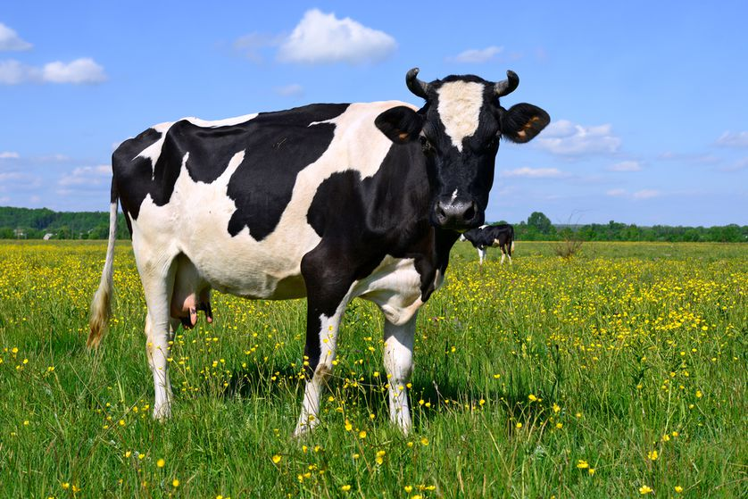

Cow
Cows are the main source of milk, they were first domesdicated at 8481BC, they were used to havest crops and push big objects
There are different types of cow, the buff cow (Belgian Blue) is a chunk of a man. 90% of the cow when they are born they die, including the mother
they are bred to have lots and lots of muscles so much that they have many disorders.
